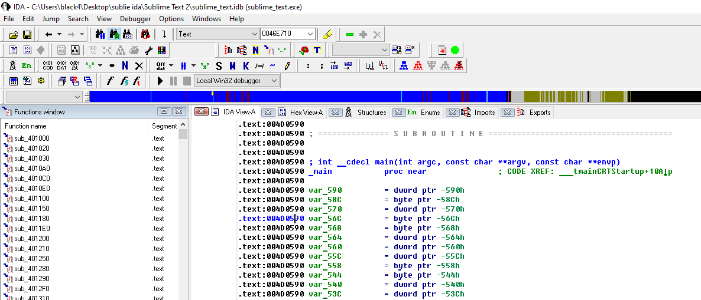

Во время использования текстового редактора Sublime Text 2, после 3- 5 сохранений файла выскакивает надоедливое окошко с просьбой купить программу (см.скриншот ниже).
Можно убрать это надоедливое окошко без покупки. Для этого потребуется программа для reverse engineering IDA, и HEX редактор - мы будем использовать HIEW.
Запускаем IDA на анализ файла sublime_text.exe и видим, что в программе есть функция main() и программа написана с использованием C++ (см.скриншот ниже).
Далее в IDA запускаем поиск по тексту строки из этого надоедливого окошка: "Hello! Thanks". Нашли- данный текст используется по адресу: 0x004CADDB (см.скриншот ниже).
Выход из данной функции на метке: .text:004CAE11 loc_4CAE11: (см.скриншот ниже).
Причем в начале функции где используется наш текст "Hello! Thanks" есть переход по условию на конец функции (см.скриншот ниже).
Давайте теперь запустим HIEW и отредактируем этот переход на конец функции:
//до редактирования .text:004CAD9D js short loc_4CAE11 //нам нужно после редактирования в HIEW .text:004CAD9D jmps short loc_4CAE11
Вот наш код в HIEW который нужно изменить (см.скриншот ниже).
В этом месте кода в HIEW нажимаем клавишу F3 для редактирования, и затем F2 для перехода в режим ассемблера - теперь мы можем вводить простые команды ассемблера для редактирования файла.
Что есть после нажатия клавиши F2 (см.скриншот ниже).
После редактирования в режиме ассемблера должно быть так (см.скриншот ниже).
Для окончания редактирования нажимаем Enter, осуществляется переход к следующей строке, и нажимаем Esc для выхода из режима редактирования. Нажимаем F9 для сохранения результата редактирования, и нажимаем F10 для выхода из HIEW.
После редактирования и выхода из режима редактирования и сохранения результата должно быть так (см.скриншот ниже).
Теперь файл sublime_text.exe отредактирован и его можно копировать в рабочую папку программы. Надоедливое окошко больше не будет беспокоить.
Теперь во время работы Sublime Text 2 при нажатии Ctrl + S (для сохранения текстового файла) окошко с просьбой купить программу не появляется.